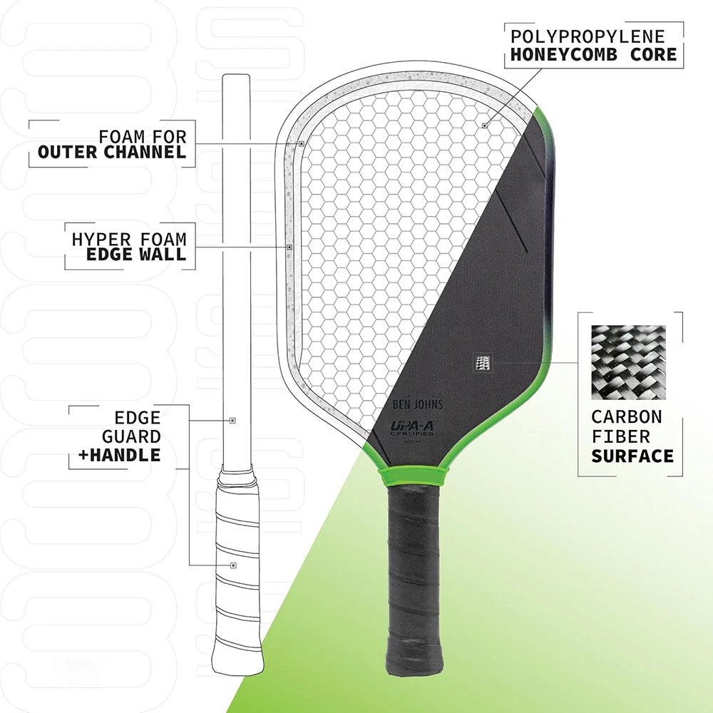
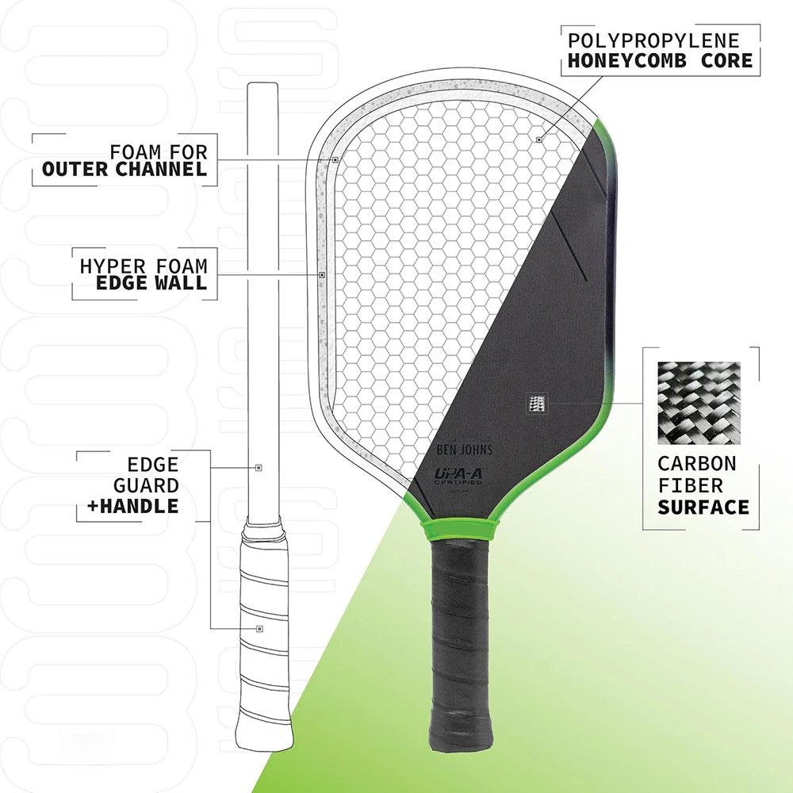

Review: Perseus 16mm Pickleball Paddle
Introduction
The world of pickleball equipment is vast and varied, with numerous brands and models vying for attention. My exploration led me to the Perseus 16mm Pickleball Paddle, a product that marked the beginning of my journey into paddles sourced directly from China. This review delves into my personal experiences with the Perseus 16mm, comparing it to well-known models like the JOOLA Ben Johns Perseus 3S and the Vatic Pro Prism Flash, and highlighting its performance, customization potential, and overall value.
Product Specifications
- Core Thickness: 16mm Polymer
- Face Material: Charged Carbon
- Shape: Standard
- Paddle Length: 16.5 inches
- Paddle Width: 7.5 inches
- Grip Length: 5.5 inches
- Grip Circumference: 4.25 inches
- Average Weight: Approximately 8 ounces
- Shipping Time: Approximately 14 days to Ontario, Canada
Performance on the Court
Power and Feel
The Perseus 16mm paddle delivers impressive power, comparable to high-end models like the JOOLA Ben Johns Perseus 3S. While the JOOLA paddle may offer a slightly more balanced feel, the Perseus holds its own, especially considering its competitive price point.
Spin and Shot Confidence
The standard shape of the Perseus 16mm provides a larger surface area, enhancing confidence during aggressive topspin serves. The paddle’s gritty surface excels in generating both topspin and sidespin.
Pop and Control
The paddle exhibits significant pop, which benefits offensive maneuvers like backhand rolls and quick volleys. However, players may need to adjust their touch on softer shots like dinks.
Customization and Adjustments
I added two 3-gram lead strips at the 10 and 2 o’clock positions to improve control. This improved paddle stability and dink accuracy. Players comfortable with additional weight might consider similar modifications.
Durability and Aesthetics
A minor drawback is the edge guard’s tendency to chip paint upon contact. While cosmetic, it doesn’t impact performance and is easy to overlook given the paddle’s value.
Conclusion
The Perseus 16mm Pickleball Paddle offers a compelling mix of power, spin, and customization potential. It performs on par with more expensive paddles, making it a great value choice despite minor aesthetic flaws.
 

Buy the Perseus Paddle